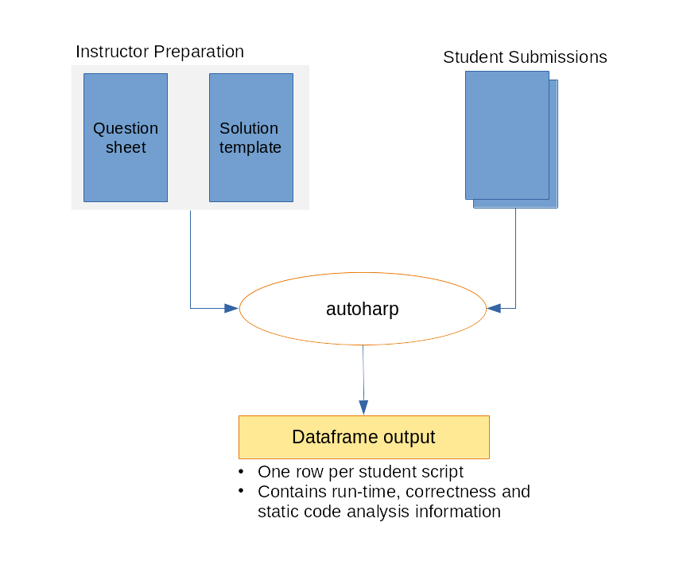

Getting Started with autoharp
getting-started.RmdWhat is autoharp?
autoharp is an R package for semi-automatic
grading of R and R Markdown (Rmd/qmd) scripts. It was designed
at the National University of Singapore to handle the practical
challenges of grading programming assignments at scale:
- Students submit complete, reproducible documents (not isolated code snippets)
- Instructors need to check both output correctness and code quality
- The same workflow must work for 10 or 1,000 submissions
- Some checks must go beyond outputs: e.g., “did the student avoid
using a
forloop?”
autoharp achieves this through four complementary
layers:
| Layer | What it Checks |
|---|---|
| Output correctness | Objects match the reference solution (typed, tolerance-aware) |
| Static code analysis | AST structure: e.g., no for loops, correct function
signature |
| Runtime profiling | Execution time and peak memory usage per submission |
| Code style (lint) |
lintr-based style violations count |
The Big Picture: Four-Phase Workflow

The four-phase autoharp grading workflow: Prepare → Distribute → Grade → Review
The typical autoharp workflow has four phases:
-
Prepare: Write a question sheet and a solution
template (an Rmd with special
autoharp.objs/autoharp.scalarschunk options) - Distribute: Share the question PDF and a blank student template
-
Grade: Run
populate_soln_env()thenrender_one()per student; each runs in a sandboxed R process - Review: Inspect logs, thumbnail galleries, and the Grading App
Installation
You can install autoharp from CRAN with:
install.packages("autoharp")You can also install the development version from GitHub:
# install.packages("devtools")
devtools::install_github("namanlab/autoharp")Then load the package:
Core Concepts
Solution Templates
The heart of autoharp is the solution
template - an R Markdown file that does two things
simultaneously:
- Contains the reference solution to the problem
- Defines test code using special knitr chunk options
Two special chunk options mark what autoharp should
extract and test:
| Chunk Option | Purpose |
|---|---|
autoharp.objs |
Lists object names to extract from this chunk and save with a dot
prefix (e.g., X → .X) for later comparison
against student objects |
autoharp.scalars |
Marks test code that produces TRUE/FALSE
scalar results; these are the correctness tests students must pass |
Why Rmd? Grading complete documents (rather than isolated snippets) ensures students practice good scientific computing habits: their entire analysis must render cleanly.
The Grading Pipeline
Solution Template (.Rmd)
│
▼
populate_soln_env() ──► Solution Environment + Test Script
│
▼
render_one(student.Rmd) ──► Grading Results Data Frame
│
▼
log_summary() ──► Summary ReportEach render_one() call: 1. Launches a fresh,
sandboxed R process (via
parallel::makePSOCKcluster) 2. Checks for forbidden calls
(system(), setwd(), etc.) 3. Knits the
student’s Rmd with autoharp hooks active 4. Runs the test
script in the student’s environment 5. Returns a data frame with status,
runtime, memory, and test results
Motivating Example
The Problem
Suppose you assign students the following problem:
Write a function
rf(n)that generatesnrandom variates from the density \(f(x) = 4x^3\), \(0 < x < 1\). Use the inverse transform method. Then create a vectorXof 10,000 variates usingrf().
Step 1: Create a Solution Template
Create solution_template.Rmd:
---
title: "Solution Template"
output: html_document
---
``` r
# Reference solution: saved as .rf in the solution environment
rf <- function(n) {
u <- runif(n)
u^(1/4) # inverse CDF of f(x) = 4x^3
}
```
``` r
set.seed(2022)
X <- rf(10000) # saved as .X
```
``` r
# Each line produces TRUE/FALSE: these become the student's test results
length(formals(rf)) == 1 # rf has exactly 1 argument
length(X) == 10000 # X has 10,000 elements
abs(mean(X) - 0.8) < 0.02 # Mean close to 0.8 (theoretical: 0.8)
abs(sd(X) - 0.1633) < 0.02 # SD close to 0.163 (theoretical)
```Step 2: Populate the Solution Environment
soln <- populate_soln_env("solution_template.Rmd")
# soln is a list with two elements:
# $soln_env: the knitted solution environment (contains .rf, .X, .test_results)
# $test_file: path to the generated test script
str(soln)Step 3: Grade a Student Submission
Suppose a student submits student01.Rmd:
result <- render_one(
rmd_name = "student01.Rmd",
soln_env = soln$soln_env,
test_file = soln$test_file,
out_dir = "output/"
)
# The result is a one-row data frame
print(result)The output data frame contains:
| Column | Description |
|---|---|
file |
Student’s filename |
status |
"success", "timeout",
"error", or "precheck_fail"
|
runtime |
Total execution time (seconds) |
mem_usage |
Peak memory usage (MB) |
test_1 … test_n
|
Result of each correctness test
(TRUE/FALSE/NA) |
n_lints |
Number of lintr style violations |
render_success |
Did the Rmd render without errors? |
Step 4: Summarise Results Across All Students
# Grade all students in a directory
student_files <- list.files("submissions/", pattern = "\\.Rmd$", full.names = TRUE)
results_list <- lapply(student_files, function(f) {
render_one(f, soln_env = soln$soln_env, test_file = soln$test_file,
out_dir = "output/")
})
all_results <- do.call(rbind, results_list)
# Print a summary table (pass rates, runtime distribution, etc.)
log_summary(all_results)Checking Code Style
autoharp integrates with the lintr package
to count style violations:
# Count lint violations in a single script
lint_count <- count_lints_one("student01.R")
# Count across all submissions
all_lints <- count_lints_all(
files = list.files("submissions/", pattern = "\\.R$", full.names = TRUE)
)
print(all_lints)Lint violations are included in the render_one() output
automatically, so you don’t need to call these separately if you’re
already running the full pipeline.
Checking Rmd Structure
For R Markdown submissions, verify that required sections and chunks are present:
# Check that the submitted Rmd has the required sections
rmd_check <- check_rmd(
rmd_name = "student01.Rmd",
expected_sections = c("Introduction", "Analysis", "Conclusion")
)
print(rmd_check)Interactive Grading with Shiny Apps
For large classes, the Grading App provides a browser-based interface that wraps the entire workflow:
# Launch the full grading GUI
shiny::runApp(system.file("shiny/grading_app", package = "autoharp"))The Grading App has five tabs:
- Session: start/resume a grading session
- Object Testing: auto-generate and run correctness tests
- Template: generate a solution template from a script
-
Autoharp: run
render_one()for all submissions with progress tracking - Plots: review student plots side-by-side with the solution
See the Shiny Apps Guide for full details.
Next Steps
-
TreeHarp
Tutorial: learn AST-based static analysis: detect
forloops, check function signatures, and more - Complete Workflow: a detailed end-to-end walkthrough with a real data analysis assignment
- Shiny Apps: use the Grading App, Similarity App, and Student Solution Checker
- Function Reference: full API documentation
Getting Help
- 📋 GitHub Issues: bug reports and feature requests
- 📖 Full Documentation: pkgdown site